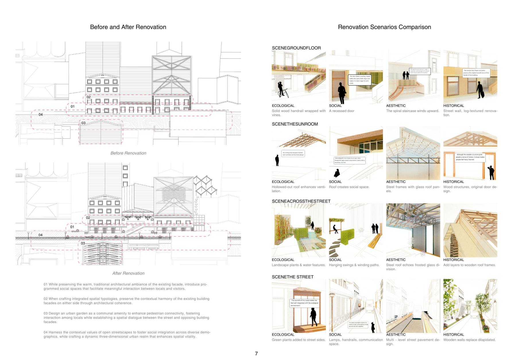
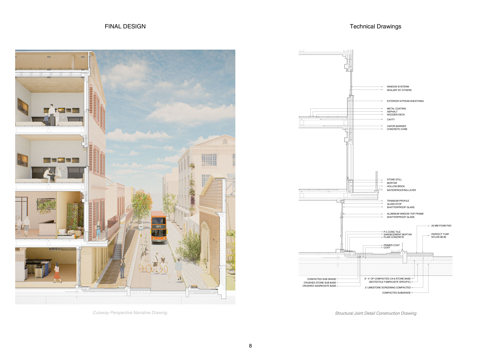
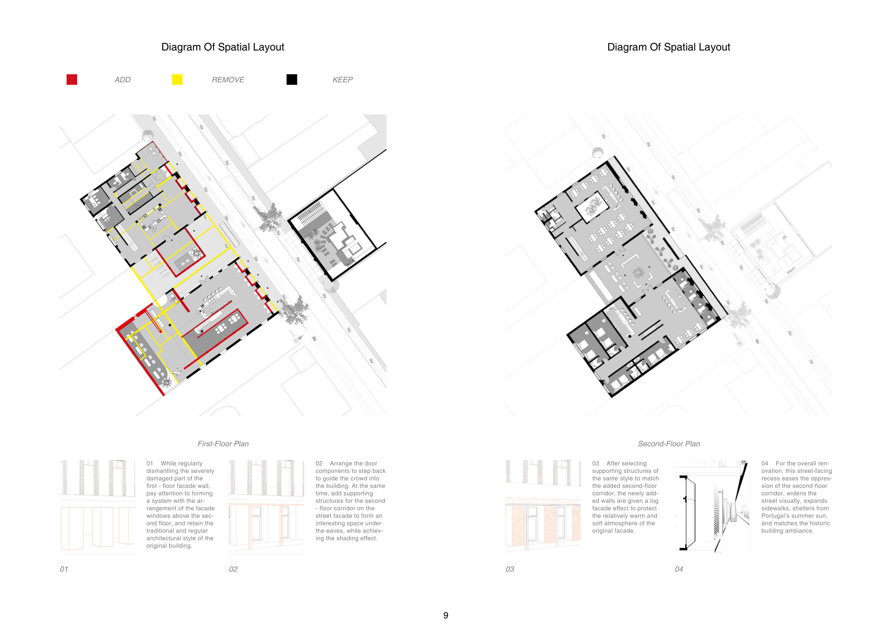

用社交媒体数据识别多方真实需求，用多情景对比做方案取舍——老渔港的更新，不靠感觉，靠证据。
一个被硬化的老渔港，各方诉求互相冲突。我用评论数据把"谁真正想要什么"量化出来，再用情景对比选出分歧最小、共识最大的更新方案。
法罗（Faro）的老渔港曾是社区公共生活的中心，随着滨水区硬化和橄榄林消失，活力衰退。更新目标不是"做得漂亮"，而是在各方诉求冲突中找到可落地的共识方案，让本地人、游客、中间服务商都能接受。
识别出三方核心用户群体，诉求天然冲突：
问题：三方的"价值偏好"差异在哪？哪些诉求必须取舍？哪些可以共存？
方法链路：社媒数据挖掘（社区讨论 + 旅游评论，共 128 条）→ 三方用户访谈 50 人（居民 / 游客 / 中间服务商）→ 提取三方对四价值的态度 → 多情景方案设计 → 价值达成度对比评估 → 共识区整合。
输出一套以"保留共识、分层取舍"为原则的更新方案：公共花园作为社区共享设施、街道两侧功能与立面的协调处理、跨街空间激活等，落到具体的空间设计图纸（平面、剖面、改造前后对比、构造节点）。
主导用户研究（三方识别、数据提取、价值框架搭建）与情景对比评估，参与方案深化。
复盘：这套"识别多方需求 → 定义价值维度 → 情景对比 → 共识取舍"的方法，和产品里的"洞察需求 → 分析权衡 → 交付方案"是同一套思维。下次会做：把评论数据做量化编码，给出可复现的统计结果。


